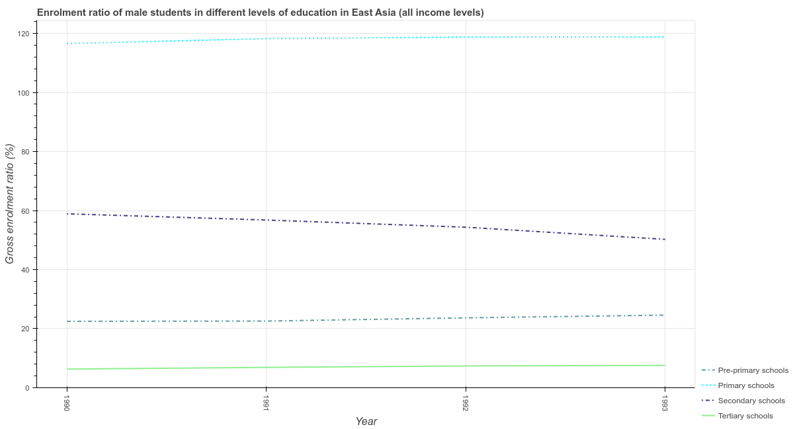
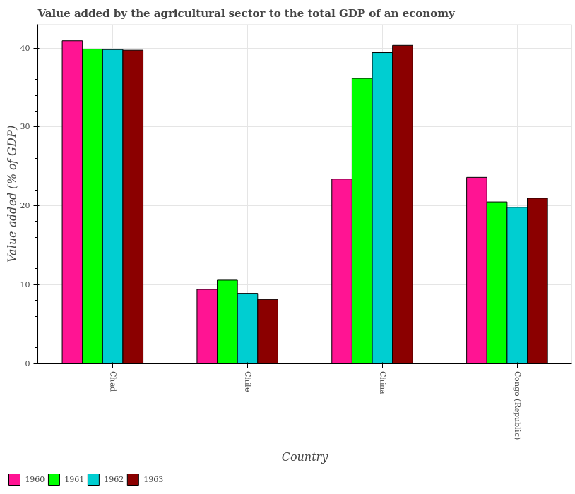
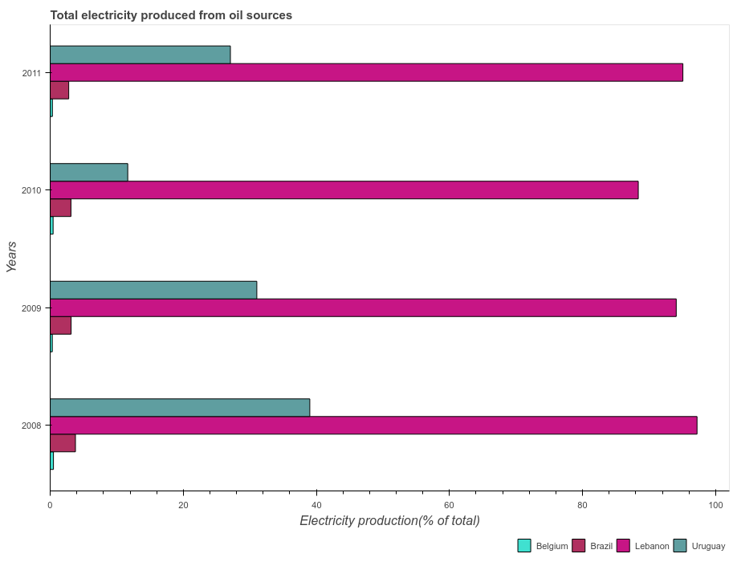
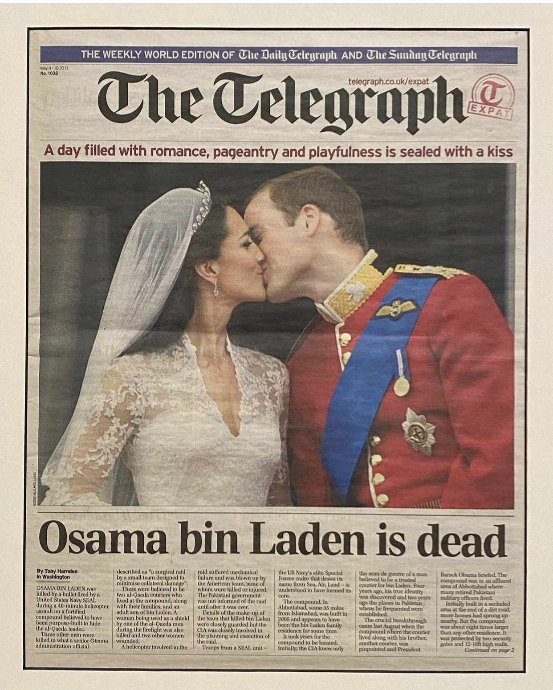

A chart compresses data. A caption compresses the chart. This talk is about
whether machines can learn that second compression — and why
generating a caption turns out to be the easy part.
“Good questions were already in decline. ChatGPT was beating an already‑dead horse.”
one sentence
Together, these three are one triplet — data, chart, caption. The caption is the smallest, most contextual compression of all.
The first conversion — data → chart — is free; machines already do it. The trick is getting from chart → caption.
Can models match a chart to a caption?
charts



?
captions
“China’s farm share of GDP jumped from 23% to 40% in three years.”
“Lebanon led electricity from oil every year — peaking near 97% in 2008.”
“Male secondary enrolment in East Asia fell from 59% to 50% over 1990–1993.”
Which caption belongs to which chart? Pairing them up is its own problem — for a person, and for a machine.
They don’t line up
Match each chart to its caption by similarity, across a corpus of ~23,000 charts:
find the right caption from its chart
got it 1st try
from the chart’s shape alone
~0.3% — basically chance
from the chart + its data
7%
… once you add the title printed on the chart
38%
The title here is the heading drawn on the chart itself — not the caption we’re trying to find.
A caption names the axis, not the topic, and to a generic vision model a chart is just shapes, not meaning — so chart
and caption don’t land near each other until that title bridges them. The chart→caption compression doesn’t
run backwards off the shelf.
Comprehending the image of a chart isn’t enough — models need to be grounded in data and semantics.
“Good questions were already in decline. ChatGPT was beating an already‑dead horse.”
one sentence
the caption still needs the data
The chart is a lossy compression. To write a faithful caption, the model still has to reach back to the data — the picture alone isn’t enough.
An Elementary Pipeline
The chartthe picture a reader sees
Its datathe numbers behind it
→
The modelan LLM, given both
→
A captionone sentence of insight
Give the model the chart and its data, ask it to write the caption. Everything that follows is variations on this one move.
PlotCaptions: the training data for that pipeline
A whole library of (data · chart · caption) triplets —
exactly the inputs and outputs the pipeline needs.
~150,000
charts
+ data
the table behind every chart
~18M
captions
Built on PlotQA (Methani et al., 2020), a 200k‑chart visual‑Q&A corpus.
I took its reasoning and comparison questions — each generated from a template — and turned every
Q&A pair back into a caption, then grammar‑checked the lot.
Each entry is one triplet: a chart, its data, and one valid caption.
The AI’s caption “Barbados requires the most days to build a warehouse among the listed countries, at 442 days — more than four times the 109 days required in Belize, the lowest in the group.”
Verdict ✓ Grounded, accurate, mildly dramatic.
This chart holds several true stories — who’s slowest, who’s fastest, how wide the spread runs. The AI wrote one of them, and it checks out.
But what makes a caption good? Another LLM judges it
Its brief
Parse the chart’s underlying data
Infer the intent from the chart’s elements — title, axes, series
Weigh its impact, not just whether it’s accurate
Few-shotted with intense & boring captions
★“Georgia’s farm output jumped ~61× in a single year, 1993→1994.”🤯
★“Uruguay’s value more than doubled in one year — the largest jump of any country.”🤯
דLife expectancy rose every year, from 78.35 to 79.1.”😒
דThe legal‑rights index stayed constant at 7 across all years.”😒
A handful of labelled examples calibrate it — then it scores every caption the same way. This judge is the instrument behind every impact score that follows.
Generator: Claude Sonnet 4.6 · Judge: Claude Opus 4.8 — a separate, stronger model.
Getting Greedy: Generate 5 Captions and Rank Them
Ask for one caption and the AI plays it safe — it reports the biggest number.
Ask for five, ranked by impact, and keep the top one:
grounded
impact (1–5)
Ask for one
92%
2.56
Ask for five, keep the best
73%
3.86
Data only, 200‑chart pilot — same input both rows; the only change is one caption vs five ranked.
When asked for five captions, up to one or two of them are made up.
But the remaining rate higher on impact.
Earlier Example
The same warehouse chart, fed through the pipeline. Bolder readings surface — but one of the five is quietly wrong.
Ask for one “Barbados takes more than 4× the days of Belize — 442 vs 109.” Grounded — but it only reports the biggest gap.
Ask for five · ranked #1 “Barbados (442) needs more days than the other four combined (587) — nearly double Belgium, a high‑income EU state.” ✗ Made up: 442 < 587. The model’s own numbers refute it — fluent, confident, wrong.
Ask for five · ranked #2 “Belgium, a heavily‑regulated EU economy, still takes less than half Barbados’s time (212 vs 442) — upending the idea that European red tape is the worst.” ✓ Bolder and true — the counter‑narrative.
Asking for impact surfaces sharper readings — and the occasional confident fabrication. Telling them apart is curation.
Results on a Larger Sample of ~23k Charts
Stratified w.r.t. type of chart (v/h bar, line, scatter, etc.) and type of caption (comparison, trend, retrieval, etc.) · model fed data + image.
Patterns of insight — % of captions
Grounded
Impact (1–5)
Unknown result
Surprising comparison
Surprising extreme
Significant outlier
Abnormal distribution
Ask 1
96%
2.23
2%
30%
15%
40%
4%
Ask 5, keep best
79%
3.84
48%
77%
26%
26%
34%
Our three charts, revisited
The room’s caption — the AI asked for one — the AI asked for five, ranked — and the reading that mattered.
Gender in the Kitchen
The room “see, men cook too.”
Ask for one “Women spend ~12.5× more time than men on meal prep — 10.2 vs 0.8 hours a week.” Grounded — the headline number.
Ask for five, ranked “Men log ~1 hour of kitchen work a week to women’s ~15 — women do roughly 94% of all kitchen labour.” Nails it — the fuller story.
The right reading women do ~12× the cooking — and almost all the serving and cleaning around it.
Questions on Stack Overflow
LinkedIn “ChatGPT killed Stack Overflow.”
Ask for one “After ChatGPT, posts fell ~90% — 3.06M in 2022 to 315k in 2025.” Grounded — but the exact LinkedIn story we opened by debunking.
Ask for five, ranked “Already down 43% before ChatGPT — 5.34M posts in 2013 to 3.06M in 2022; it accelerated an existing decline, didn’t start it.” Right — the counter‑narrative.
The right reading both series peaked years before ChatGPT. It was beating an already‑dead horse.
Health Insurance & Addiction
The room / op‑ed insurance drives intoxicant spend — moral hazard.
Ask for one “Foreign Liquor/Wine is the top intoxicant in both panels — Rs 83 per adult among the urban uninsured, the largest value shown.” Grounded — just the biggest number.
Ask for five, ranked “It’s the uninsured, not the insured, who spend more on the two priciest items — foreign liquor and beer — in both panels.” A real directional pattern, arguably sharper — yet still not the honest ‘barely matters.’
The right reading the gaps are small — insurance barely moves the needle, a non‑result that “rank by impact” will never surface.
A new chart triplet
The chart, its numbers, and the model — each brings something
different to a caption.
Image
carries the intent — the comparison, trend, or ranking the chart was built to show.
the intent
The numbers
bring the numerical fidelity — the exact values, pinned down.
the fidelity
The LLM
brings the discovery — it finds the insight worth telling.
the discovery
The image shows the intent, the numbers keep it faithful, and the LLM does the discovering.
Sooner or later, you will use LLMs to evaluate DataViz
Do
Ask for five, ranked by impact, and keep the best — not one shot. The prompt is the insight knob (+1.3).
Ground it in the numbers for fidelity, and judge with a separate, stronger model.
Treat the LLM as a candidate generator to curate — selection, not generation.
Don’t
Don’t mistake fluency for fidelity — a confident caption claimed 442 > 587.
Don’t trust the top-ranked caption on sight — check the arithmetic.
Don’t expect ranking by impact to surface a genuine non‑result.
Use it, and beat the benchmark: PlotCaptions · jaidevd.com/posts/plotcaptions/

Use the dataset. Discover your prompts.
PlotCaptions is open — ~150k charts with their data and ~18M captions.